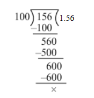
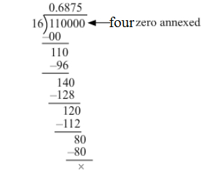
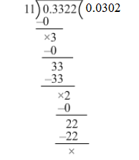
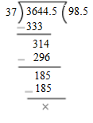
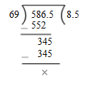
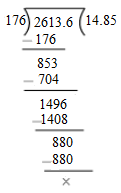
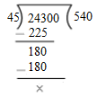

Question:1
Convert each of the following into a fraction in its simplest form:
(i) .8
(ii) .75
(iii) .06
(iv) .285
Solution:
We have:
(i)
(ii)
(iii)
(iv)
Question:2
Convert each of the following as a mixed fraction:
(i) 5.6
(ii) 12.25
(iii) 6.004
(iv) 4.625
Solution:
We have:
(i)
(ii)
(iii)
(iv)
Question:3
Convert each of the following into like decimals:
(i)
(ii)
(iii)
(iv)
(v)
(vi)
(vii)
(viii)
Solution:
(i)
On dividing, we get:
∴
= 4.7
(ii)
On dividing, we get:

∴
= 1.56
(iii)
On dividing, we get:
∴
= 25.16
(iv)
On dividing, we get:
∴
= 3.524
(v)
On dividing, we get:
.png)
∴
= 3.125
(vi)
On dividing, we get:
∴
= 3.4
(vii)
On dividing, we get:
.png)
∴
= 2.08
(viii)
On dividing, we get:
∴
= 0.85
Question:4
Convert each of the following into like decimals:
(i) 6.5, 16.03, 0.274, 119.4
(ii) 3.5, 0.67, 15.6, 4
Solution:
Converting the given decimals into like decimals, we have:
(i) 6.500, 16.030, 0.274 and 119.400
(ii) 3.50, 0.67, 15.60 and 4.00
Question:5
Fill in each of the place holders with the correct symbol > or <.
(i) 78.23 69.85
(ii) 3.406 3.46
(iii) 5.68 5.86
(iv) 14.05 14.005
(v) 1.85 1.805
(vi) 0.98 1.07
Solution:
We have,
(i) Comparing the whole number part, 78 > 69.
Thus, 78.23 > 69.85
(ii) Converting the decimals into like decimals, we get 3.406 and 3.460.
Comparing the whole number parts, 3 = 3
Comparing the tenths digit, 4 = 4
Comparing the hundredths digit, 6 > 0
Thus, 3.406 < 3.46
(iii) Comparing the whole number parts, 5 = 5
Comparing the tenths digit, 6 < 8
Thus, 5.68 < 5.86
(iv) Converting the decimals into like decimals, we get 14.050 and 14.005.
Comparing the whole number parts, 14 = 14
Comparing the tenths digit, 0 = 0
Comparing the hundredths digit, 5 > 0
Thus, 14.05 > 14.005
(v) Converting the decimals into like decimals, we get 1.850 and 1.805.
Comparing the whole number parts, 1 = 1
Comparing the tenths digit, 8 = 8
Comparing the hundredths digit, 5 > 0
Thus, 1.85 > 1.805
(vi) Comparing the whole number parts, 0 < 1
Thus, 0.98 < 1.07
Question:6
Arrange the following decimals in ascending order:
(i) 4.6, 7.4, 4.58, 7.32, 4.06
(ii) 0.5, 5.5, 5.05, 0.05, 5.55
(iii) 6.84, 6.48, 6.8, 6.4, 6.08
(iv) 2.2, 2.202, 2.02, 22.2, 2.002
Solution:
(i) Converting the given decimals into like decimals, we get:
4.60, 7.40, 4.58, 7.32, 4.06
Clearly, 4.06 < 4.58 < 4.60 < 7.32 < 7.40
Hence, the given decimals in ascending order are 4.06, 4.58, 4.6, 7.32 and 7.4.
(ii) Converting the given decimals into like decimals, we get:
0.50, 5.50, 5.05, 0.05, 5.55
Clearly, 0.05 < 0.50 < 5.05< 5.50 < 5.55
Hence, the given decimals in ascending order are 0.05, 0.5, 5.05, 5.5 and 5.55.
(iii) Converting the given decimals into like decimals, we get:
6.84, 6.48, 6.80, 6.40, 6.08
Clearly, 6.08 < 6.40 < 6.48 < 6.80< 6.84
Hence, the given decimals in ascending order are 6.08, 6.4, 6.48, 6.8 and 6.84.
(iv) Converting the given decimals into like decimals, we get:
2.200, 2.202, 2.020, 22.200, 2.002
Clearly, 2.002 < 2.020 < 2.200 < 2.202 < 22.200
Hence, the given decimals in ascending order are 2.002, 2.02, 2.2, 2.202 and 22.2.
Question:7
Arrange the following decimals in descending order:
(i) 7.4, 8.34, 74.4, 7.44, 0.74
(ii) 2.6, 2.26, 2.06, 2.007, 2.3
Solution:
(i) Converting the given decimals into like decimals, we get:
7.40, 8.34, 74.40, 7.44, 0.74
Clearly, 74.40 > 8.34 > 7.44 > 7.40 > 0.74
Hence, the given decimals in descending order are 74.4, 8.34, 7.44, 7.4 and 0.74.
(ii) Converting the given decimals into like decimals, we get:
2.600, 2.260, 2.060, 2.007, 2.300
Clearly, 2.600 > 2.300 > 2.260 > 2.060 > 2.007
Hence, the given decimals in descending order are 2.6, 2.3, 2.26, 2.06 and 2.007.
Question:8
Express 45 mm in cm, m and km.
Solution:
45 mm = cm = 4.5 cm
= 4.5 cm = = 0.045 m
= 0.045 m = = 0.000045 km
∴ 45 mm = 4.5 cm = 0.045 m = 0.000045 km
Question:9
Express as rupees using decimals:
(i) 8 paise
(ii) 9 rupees 75 paise
(iii) 8 rupees 5 paise
Solution:
We have:
(i) 8 paise = Rs = Rs 0.08
(ii) 9 rupees 75 paise = Rs = Rs 9.75
(iii) 8 rupees 5 paise = = Rs 8.05
Question:10
Express in km using decimals:
(i) 65 m
(ii) 284 m
(iii) 3 km 5 m
Solution:
We have:
(i) 65 m = km = 0.065 km
∴ 65 m = 0.065 km
(ii) 284 m = km = 0.284 km
(iii) 3 km 5 m =
Question:11
Add:
16, 8.7, 0.94, 6.8 and 7.77
Solution:
Converting the given decimals into like decimals, we get:
16.00, 8.70, 0.94, 6.80 and 7.77
Writing these decimals in column form and adding, we get:
Hence, the sum of the given decimals is 40.21
Question:12
Add:
18.6, 206.37, 8.008, 26.4 and 6.9
Solution:
Converting the given decimals into like decimals, we get:
18.600, 206.370, 8.008, 26.400 and 6.900
Writing these decimals in column form and adding, we get:
Hence, the sum of the given decimals is 266.278.
Question:13
Add:
63.5, 9.7, 0.8, 26.66 and 12.17
Solution:
Converting the given decimals into like decimals, we get:
63.50, 9.70, 0.80, 26.66 and 12.17
Writing these decimals in column form and adding, we get:
Hence, the sum of the given decimals is 112.83.
Question:14
Add:
17.4, 86.39, 9.435, 8.8 and 0.06
Solution:
Converting the given decimals into like decimals, we get:
17.400, 86.390, 9.435, 8.800 and 0.060
Writing these decimals in column form and adding, we get:
Hence, the sum of the given decimals is 122.085.
Question:15
26.9, 19.74, 231.769 and 0.048
Solution:
Converting the given decimals into like decimals, we get:
26.900, 19.740, 231.769 and 0.048
Writing these decimals in column form and adding, we get:
Hence, the sum of the given decimals is 278.457.
Question:16
Add:
23.8, 8.94, 0.078 and 214.6
Solution:
Converting the given decimals into like decimals, we get:
23.800, 8.940, 0.078 and 214.600
Writing these decimals in column form and adding, we get:
Hence, the sum of the given decimals is 247.418.
Question:17
Add:
6.606, 66.6, 666, 0.066, 0.66
Solution:
Converting the given decimals into like decimals, we get:
6.606, 66.600, 666.000, 0.066 and 0.660
Writing these decimals in column form and adding, we get:
Hence, the sum of the given decimals is 739.932.
Question:18
Add:
9.09, 0.909, 99.9, 9.99, 0.099
Solution:
Converting the given decimals into like decimals, we get:
9.090, 0.909, 99.900, 9.990 and 0.099
Writing these decimals in column form and adding, we get:
Hence, the sum of the given decimals is 119.988.
Question:19
Subtract:
14.79 from 72.43
Solution:
The given decimals are like decimals. Writing them in column form with the larger one at the top and subtracting them, we get:
∴ (72.43 − 14.79) = 57.64
Question:20
Subtract:
36.74 from 52.6
Solution:
Converting the given decimals into like decimals, we get:
36.74 and 52.60
Writing them in column form with the larger one at the top and subtracting them, we get:
∴ (52.60 − 36.74) = 15.86
Question:21
Subtract:
13.876 from 22
Solution:
Converting the given decimals into like decimals, we get:
13.876 and 22.000
Writing them in column form with the larger one at the top and subtracting them, we get:
∴ (22.000 − 13.876) = 8.124
Question:22
Subtract:
15.079 from 24.16
Solution:
Converting the given decimals into like decimals, we get:
15.079 and 24.160
Writing them in column form with the larger one at the top and subtracting them, we get:
∴ (24.160 − 15.079) = 9.081
Question:23
Subtract:
0.68 from 1.007
Solution:
Converting the given decimals into like decimals, we get:
0.680 and 1.007
Writing them in column form with the larger one at the top and subtracting them, we get:
∴ (1.007 − 0.680) = 0.327
Question:24
Subtract:
0.4678 from 5.05
Solution:
Converting the given decimals into like decimals, we get:
0.4678 and 5.0500
Writing them in column form with the larger one at the top and subtracting them, we get:
∴ (5.0500 − 0.4678) = 4.5822
Question:25
Subtract:
2.5307 from 8
Solution:
Converting the given decimals into like decimals, we get:
2.5307 and 8.0000
Writing them in column form with the larger one at the top and subtracting them, we get:
∴ (8.0000 − 2.5307) = 5.4693
Question:26
Subtract:
6.732 from 9.001
Solution:
Writing the given like decimals in column form with the larger one at the top and subtracting them, we get:
.png)
∴ (9.001 − 6.732) = 2.269
Question:27
Take out 5.746 from 9.1.
Solution:
Converting the given decimals into like decimals, we get:
5.746 and 9.100
Writing them in column form with the larger one at the top and subtracting them, we get:
∴ (9.100 − 5.746) = 3.354
Question:28
What is to be added to 63.58 to get 92?
Solution:
Converting the given decimals into like decimals, we get:
63.58 and 92.00
Thus, required number = (92.00 − 63.58) = 28.42
Hence, 28.42 should be added to 63.58 to get 92.
Question:29
What is to be subtracted from 8.1 to get 0.813?
Solution:
Converting the given decimals into like decimals, we get:
8.100 and 0.813
Thus, required number = (8.100 − 0.813) = 7.287
Hence, 7.287 should be subtracted from 8.1 to get 0.813.
Question:30
By how much should 32.67 be increased to get 60.1?
Solution:
Converting the given decimals into like decimals, we get:
32.67 and 60.10
Thus, required number = (60.10 − 32.67) = 27.43
Hence, 32.67 should be increased by 27.43 to get 60.1.
Question:31
By how much should 74.3 be decreased to get 26.87?
Solution:
Converting the given decimals into like decimals, we get:
74.30 and 26.87
Thus, required number = (74.30 − 26.87) = 47.43
Hence, 74.3 should be decreased by 47.43 to get 26.87.
Question:32
Rohit purchased a notebook for Rs 23.75, a pencil for Rs 2.85 and a pen for Rs 15.90. He gave a 50-rupee note to the shopkeeper. What amount did he get back?
Solution:
Total amount spent by Rohit on purchasing of the given articles = Rs (23.75 + 2.85 + 15.90)
= Rs 42.50
Money given to the shopkeeper = Rs 50
∴ Money returned by the shopkeeper = Rs (50 − 42.50)
= Rs 7.50
Thus, amount received by Rohit = Rs 7.50
Question:33
Find the product:
(i) 73.92 × 10
(ii) 7.54 × 10
(iii) 84.003 × 10
(iv) 0.83 × 10
(v) 0.7 × 10
(vi) 0.032 × 10
Solution:
We have the following:
(i) 73.92 × 10 = 739.2 [Shifting the decimal point to the right by 1 place]
(ii) 7.54 × 10 = 75.4 [Shifting the decimal point to the right by 1 place]
(iii) 84.003 × 10 = 840.03 [Shifting the decimal point to the right by 1 place]
(iv) 0.83 × 10 = 8.3 [Shifting the decimal point to the right by 1 place]
(v) 0.7 × 10 = 7 [Shifting the decimal point to the right by 1 place]
(vi) 0.032 × 10 = 0.32 [Shifting the decimal point to the right by 1 place]
Question:34
Find the product:
(i) 2.397 × 100
(ii) 6.83 × 100
(iii) 2.9 × 100
(iv) 0.08 ×100
(v) 0.6 × 100
(vi) 0.003 × 100
Solution:
We have the following:
(i) 2.397 × 100 = 239.7 [Shifting the decimal point to the right by 2 places]
(ii) 6.83 × 100 = 683 [Shifting the decimal point to the right by 2 places]
(iii) 2.9 × 100 = 290 [Shifting the decimal point to the right by 2 places]
(iv) 0.08 ×100 = 8 [Shifting the decimal point to the right by 2 places]
(v) 0.6 × 100 = 60 [Shifting the decimal point to the right by 2 places]
(vi) 0.003 × 100 = 0.3 [Shifting the decimal point to the right by 2 places]
Question:35
Find the product:
(i) 6.7314 × 1000
(ii) 0.182 × 1000
(iii) 0.076 × 1000
(iv) 6.25 × 1000
(v) 4.8 × 1000
(vi) 0.06 × 1000
Solution:
We have:
(i) 6.7314 × 1000 = 6731.4 [Shifting the decimal point to the right by 3 places]
(ii) 0.182 × 1000 = 182 [Shifting the decimal point to the right by 3 places]
(iii) 0.076 × 1000 = 76 [Shifting the decimal point to the right by 3 places]
(iv) 6.25 × 1000 = 6250 [Shifting decimal point to the right by 3 places]
(v) 4.8 × 1000 = 4800 [Shifting the decimal point to the right by 3 places]
(vi) 0.06 × 1000 = 60 [Shifting the decimal point to the right by 3 places]
Question:36
Find the product:
(i) 5.4 × 16
(ii) 3.65 × 19
(iii) 0.854 × 12
(iv) 36.73 × 48
(v) 4.125 × 86
(vi) 104.06 × 75
(vii) 6.032 × 124
(viii) 0.0146 × 69
(ix) 0.00125 × 327
Solution:
We have the following:
(i) 54 16 = 864
∴ 5.4 16 = 86.4 [1 place of decimal]
(ii) 365 19 = 6935
∴ 3.65 19 = 69.35 [2 places of decimal]
(iii) 854 12 = 10248
∴ 0.854 12 = 10.248 [3 places of decimal]
(iv) 3673 48 = 176304
∴ 36.78 48 = 1763.04 [2 places of decimal]
(v) 4125 86 = 354750
∴ 4.125 86 = 354.750 [3 places of decimal]
= 354.75
(vi) 10406 75 = 780450
∴ 104.06 75 = 7804.50 [2 places of decimal]
= 7804.5
(vii) 6032 124 = 747968
∴ 6.032 124 = 747.968 [3 places of decimal]
(viii) 146 69 = 10074
∴ 0.0146 69 = 1.0074 [4 places of decimal]
(ix) 125 327 = 40875
∴ 0.00125 327 = 0.40875 [5 places of decimal]
Question:37
Find the product
(i) 7.6 × 2.4
(ii) 3.45 × 6.3
(iii) 0.54 × 0.27
(iv) 0.568 × 4.9
(v) 6.54 × 0.09
(vi) 3.87 × 1.25
(vii) 0.06 × 0.38
(viii) 0.623 × 0.75
(ix) 0.014 × 0.46
(x) 54.5 × 1.76
(xi) 0.045 × 2.4
(xii) 1.245 × 6.4
Solution:
(i) First, we will multiply 76 by 24.
∴ 76 24 = 1824
Sum of decimal places in the given numbers = (1 + 1) = 2
∴ 7.6 2.4 = 18.24 [2 places of decimal]
(ii) First, we will multiply 345 by 63.
∴ 345 63 = 21735
Sum of decimal places in the given numbers = (2 + 1) = 3
∴ 3.45 6.3 = 21.735 [3 places of decimal]
(iii) First, we will multiply 54 by 27.
∴ 54 27 = 1458
Sum of decimal places in the given numbers = (2 + 2) = 4
∴ 0.54 0.27 = 0.1458 [4 places of decimal]
(iv) First, we will multiply 568 by 49.
∴ 568 49 = 27832
Sum of decimal places in the given numbers = (3 + 1) = 4
∴ 0.568 4.9 = 2.7832 [4 places of decimal]
(v) First, we multiply 654 by 9.
∴ 654 9 = 5886
Sum of decimal places in the given numbers = (2 + 2) = 4
∴ 6.54 0.09 = 0.5886 [4 places of decimal]
(vi) First, we will multiply 387 by 125.
∴ 387 125 = 48375
Sum of decimal places in the given numbers = (2 + 2) = 4
∴ 3.87 1.25 = 4.8375 [4 places of decimal]
(vii) First, we will multiply 38 by 6.
∴ 38 6 = 228
Sum of decimal places in the given numbers = (2 + 2) = 4
∴ 0.06 0.38 = 0.0228 [4 places of decimal]
(viii) First, we will multiply 623 by 75.
∴ 623 75 = 46725
Sum of decimal places in the given numbers = (3 + 2) = 5
∴ 0.623 0.75 = 0.46725 [5 places of decimal]
(ix) First, we will multiply 14 by 46.
∴ 14 46 = 644
Sum of decimal places in the given numbers = (3 + 2) = 5
∴ 0.014 0.46 = 0.00644 [5 places of decimal]
(x) First, we will multiply 545 by 176.
∴ 545 176 = 95920
Sum of decimal places in the given numbers = (1 + 2) = 3
∴ 54.5 1.76 = 95.920 [3 places of decimal]
= 95.92
(xi) First, we will multiply 45 by 24.
∴ 45 24 = 1080
Sum of decimal places in the given numbers = (3 + 1) = 4
∴ 0.045 2.4 = 0.1080 [4 places of decimal]
= 0.108
(xii) First, we will multiply 1245 by 64.
∴ 1245 64 = 79680
Sum of decimal places in the given numbers = (3 + 1) = 4
∴ 1.245 6.4 = 7.9680 [4 places of decimal]
= 7.968
Question:38
Find the product:
(i) 13 × 1.3 × 0.13
(ii) 2.4 × 1.5 × 2.5
(iii) 0.8 × 3.5 × 0.05
(iv) 0.2 × 0.02 × 0.002
(v) 11.1 × 1.1 × 0.11
(vi) 2.1 × 0.21 × 0.021
Solution:
(i) First, we will find the product 13 ⨯ 1.3 ⨯ 0.13.
Now, 13 ⨯ 13 ⨯ 13 = 169 x 13
= 2197
Sum of decimal places in the given numbers = (1 + 2) = 3
So, the product must have three decimal places.
∴ 13 ⨯ 1.3 ⨯ 0.13 = 2.197
(ii) First, we will find the product 2.4 ⨯ 1.5 ⨯ 2.5.
Now, 24 ⨯ 15 ⨯ 25 = 360 x 25
= 9000
Sum of decimal places in the given numbers = (1 + 1 + 1) = 3
So, the product must have three decimal places.
∴ 2.4 ⨯ 1.5 ⨯ 2.5 = 9.000
= 9
(iii) First, we will find the product 0.8 ⨯ 3.5 ⨯ 0.05.
Now, 8 ⨯ 35 ⨯ 5 = 280 ⨯ 5
= 1400
Sum of decimal places in the given numbers = (1 + 1 + 2) = 4
So, the product must have four decimal places.
∴ 0.8 ⨯ 3.5 ⨯ 0.05 = 0.1400
= 0.14
(iv) First, we will find the product 0.2 ⨯ 0.02 ⨯ 0.002.
Now, 2 ⨯ 2 ⨯ 2 = 4 ⨯ 2
= 8
Sum of decimal places in the given numbers = (1 + 2 + 3) = 6
So, the product must have six decimal places.
∴ 0.2 ⨯ 0.02 ⨯ 0.002 = 0.000008
(v) First, we will find the product 11.1 ⨯ 1.1 ⨯ 0.11.
Now, 111 ⨯ 11 ⨯ 11 = 1221 ⨯ 11
= 13431
Sum of decimal places in the given numbers = (1 + 1 + 2) = 4
So, the product must have four decimal places.
∴ 11.1 ⨯ 1.1 ⨯ 0.11 = 1.3431
(vi) First, we will find the product 2.1 ⨯ 0.21 ⨯ 0.021.
Now, 21 ⨯ 21 ⨯ 21 = 441 ⨯ 21
= 9261
Sum of decimal places in the given numbers = ( 1 + 2 + 3) = 6
So, the product must have six decimal places.
∴ 2.1 ⨯ 0.21 ⨯ 0.021 = 0.009261
Question:39
Evaluate:
(i) (1.2)2
(ii) (0.7)2
(iii) (0.04)2
(iv) (0.11)2
Solution:
(i) (1.2)2 = 1.2 1.2
First, we will find the product 1.2 1.2.
Now, 12 12 = 144
Sum of decimal places in the given numbers = (1 + 1) = 2
So, the product must have two decimal places.
∴ (1.2)2 = 1.2 1.2 = 1.44
(ii) (0.7)2 = 0.7 0.7
First, we will find the product 0.7 0.7.
Now, 7 7 = 49
Sum of decimal places in the given numbers = (1 + 1) = 2
So, the product must have two decimal places.
∴ (0.7)2 = 0.7 0.7 = 0.49
(iii) (0.04)2 = 0.04 0.04
First, we will find the product 0.04 0.04.
Now, 4 4 = 16
Sum of decimal places in the given numbers = (2 + 2) = 4
So, the product must have four decimal places.
∴ (0.04)2 = 0.04 0.04 = 0.0016
(iv) (0.11)2 = 0.11 0.11
First, we will find the product 0.11 0.11.
Now, 11 11 = 121
Sum of decimal places in the given numbers = ( 2 + 2) = 4
So, the product must have four decimal places.
∴ (0.11)2 = 0.11 0.11 = 0.0121
Question:40
Evaluate:
(i) (0.3)3
(ii) (0.05)3
(iii) (1.5)3
Solution:
(i) (0.3)3 = 0.3 0.3 0.3
First, we will find the product 3 3 3.
Now, 3 3 3 = 27
Sum of decimal places in the given numbers = (1 + 1 + 1) = 3
So, the product must have three places of decimal.
∴ (0.3)3 = 0.3 0.3 0.3 = 0.027
(ii) (0.05)3 = 0.05 0.05 0.05
First, we will find the product 5 5 5.
Now, 5 5 5 = 125
Sum of decimal places in the given numbers = (2 + 2 + 2) = 6
So, the product must have six decimal places.
∴ (0.05)3 = 0.05 0.05 0.05 = 0.000125
(iii) (1.5)3 = 1.5 1.5 1.5
First, we will find the product 15 15 15.
Now, 15 15 15 = 225 15 = 3375
Sum of decimal places in the given numbers = (1 + 1 + 1) = 3
So, the product must have three decimal places.
∴ (1.5)3 = 1.5 1.5 1.5 = 3.375
Question:41
A bus can cover 62.5 km in one hour. How much distance can it cover in 18 hours?
Solution:
Distance covered by the bus in 1 hour = 62.5 km
∴ Distance covered in 18 hours = (62.5 18) km
= 1125 km
Hence, the bus can cover a distance of 1125 km in 18 hours.
Question:42
A tin of oil weighs 16.8 kg. What is the weight of 45 such tins?
Solution:
Weight of 1 tin of oil = 16.8 kg
∴ Weight of 45 such tins = (16.8 45) kg
= 756 kg
Hence, the weight of 45 tins of oil is 756 kg.
Question:43
A bag of wheat weighs 97.8 kg. How much wheat is contained in 500 such bags?
Solution:
Weight of 1 bag of wheat = 97.8 kg
∴ Weight of 500 such bags = (97.8 x 500) kg
= 48900 kg
Hence, the weight of 500 bags of wheat is 48900 kg.
Question:44
Find the weight of 16 bags of sugar, each weighing 48.450 kg.
Solution:
Weight of 1 bag of sugar = 48.450 kg
∴ Weight of 16 bags of sugar = (48.450 ⨯ 16) kg
= 775.2 kg
Hence, the weight of 16 bags of sugar is 775.2 kg.
Question:45
A small bottle holds 0.845 kg of sauce. How much sauce will be there in 72 such bottles?
Solution:
Capacity of 1 sauce bottle = 0.845 kg
∴ Capacity of 72 such bottles = (0.845 72) kg
= 60.84 kg
Hence, the capacity of 72 bottles of sauce will be 60.84 kg.
Question:46
A bottle holds 925 g of jam. How many kg of jam will be there in 25 such bottles?
Solution:
Weight of 1 bottle of jam = 925 g =0.925 kg
∴ Weight of 25 such bottles = (0.925 25) kg
= 23.125 kg
∴ The weight of 25 bottles of jam will be 23.125 kg.
Question:47
If one drum can hold 16.850 litres of oil, how many litres can 48 such drums hold?
Solution:
Capacity of 1 drum of oil = 16.850 litres
∴ Capacity of 48 such drums = (16.850 x 48) litres
= 808.800 litres
Hence, the capacity of 48 drums of oil is 808.800 litres.
Question:48
1 kg of rice costs Rs 56.80. What is the cost of 16.25 kg of rice?
Solution:
Cost of 1 kg of rice =Rs 56.80
∴ Cost of 16.25 kg of rice = Rs (56.80 16.25)
= Rs 923
Hence, the cost of 16.25 kg of rice is Rs 923.
Question:49
1 metre of cloth costs Rs 108.50. What is the cost of 18.5 metres of this cloth?
Solution:
Cost of 1 m of cloth = Rs 108.50
∴ Cost of 18.5 m of cloth = Rs (108.50 x 18.5)
= Rs 2007.25
Hence, the cost of 18.5 m of cloth is Rs 2007.25.
Question:50
A car can cover a distance of 8.6 km on one litre of petrol. How far can it go on 36.5 litres of petrol?
Solution:
Distance covered by the car with 1 litre of petrol = 8.6 km
∴ Distance covered with 36.5 litres of petrol = (8.6 36.5) km
= 313.900 km
Hence, the distance covered by the car with 36.5 litres of petrol is 313.900 km.
Question:51
A taxi driver charges Rs 9.80 per km. How much will he charge for a journey of 106.5 km?
Solution:
Charges for 1 km = Rs 9.80
∴ Charges for 106.5 km = Rs (9.80 106.5)
= Rs 1043.70
Hence, the taxi driver will charge Rs 1043.70 for a journey of 106.5 km.
Question:52
Divide:
(i) 131.6 by 10
(ii) 32.56 by 10
(iii) 4.38 by 10
(iv) 0.34 by 10
(v) 0.08 by 10
(vi) 0.062 by 10
Solution:
We have the following:
(i) 131.6 ÷ 10 = [Shift the decimal point to the left by 1 place]
(ii) 32.56 ÷ 10 = [Shift the decimal point to the left by 1 place]
(iii) 4.38 ÷ 10 = [Shift the decimal point to the left by 1 place]
(iv) 0.34 ÷ 10 = [Shift the decimal point to the left by 1 place]
(v) 0.08 ÷ 10 = [Shift the decimal point to the left by 1 place]
(vi) 0.062 ÷ 10 = [Shift the decimal point to the left by 1 place]
Question:53
Divide:
(i) 137.2 by 100
(ii) 23.4 by 100
(iii) 4.7 by 100
(iv) 0.3 by 100
(v) 0.58 by 100
(vi) 0.02 by 100
Solution:
We have the following:
(i) 137.2 ÷ 100 = [Shifting the decimal point to the left by 2 places]
(ii) 23.4 ÷ 100 = [Shifting the decimal point to the left by 2 places]
(iii) 4.7 ÷ 100 = [Shifting the decimal point to the left by 2 places]
(iv) 0.3 ÷ 100 = [Shifting the decimal point to the left by 2 places]
(v) 0.58 ÷ 100 = [Shifting the decimal point to the left by 2 places]
(vi) 0.02 ÷ 100 = [Shifting the decimal point to the left by 2 places]
Question:54
Divide:
(i) 1286.5 by 1000
(ii) 354.16 by 1000
(iii) 38.9 by 1000
(iv) 4.6 by 1000
(v) 0.8 by 1000
(vi) 2 by 1000
Solution:
We have the following:
(i) 1286.5 ÷ 1000 = [Shift the decimal point to the left by 3 places]
(ii) 354.16 ÷ 1000 = [Shift the decimal point to the left by 3 places]
(iii) 38.9 ÷ 1000 = [Shift the decimal point to the left by 3 places]
(iv) 4.6 ÷ 1000 = [Shift the decimal point to the left by 3 places]
(v) 0.8 ÷ 1000 = [Shift the decimal point to the left by 3 places]
(vi) 2 ÷ 1000 = [Shift the decimal point to the left by 3 places]
Question:55
Divide:
(i) 12 by 8
(ii) 63 by 15
(iii) 47 by 20
(iv) 101 by 25
(v) 31 by 40
(vi) 11 by 16
Solution:
(i) 12 ÷ 8 =
∴ 12 ÷ 8 = 1.5
(ii) 63 ÷ 15 =
∴ 63 ÷ 15 = 4.2
(iii) 47 ÷ 20 =
∴ 47 ÷ 20 = 2.35
(iv) 101 ÷ 25 =
∴ 101 ÷ 25 = 4.04
(v ) 31 ÷ 40
(1).png)
∴ 31 ÷ 40 = 0.775
(vi) 11 ÷ 16 =

∴ 11 ÷ 16 = 0.6875
Question:56
Divide:
(i) 43.2 by 6
(ii) 60.48 by 12
(iii) 117.6 by 21
(iv) 217.44 by 18
(v) 2.575 by 25
(vi) 6.08 by 8
(vii) 0.765 by 9
(viii) 0.768 by 16
(ix) 0.175 by 25
(x) 0.3322 by 11
(xi) 2.13 by 15
(xii) 6.54 by 12
(xiii) 5.52 by 16
(xiv) 1.001 by 14
(xv) 0.477 by 18
Solution:
(i) We have:
43.2 ÷ 6
∴ 43.2 ÷ 6 = 7.2
(ii) We have:
60.48 ÷ 12
∴ 60.48 ÷ 12 = 5.04
(iii) We have:
117.6 ÷ 21
∴ 117.6 ÷ 21 = 5.6
(iv) We have:
217.44 ÷ 18
∴ 217.44 ÷ 18 = 12.08
(v) We have:
2.575 ÷ 25
∴ 2.575 ÷ 25 = 0.103
(vi) We have:
6.08 ÷ 8
∴ 6.08 ÷ 8 = 0.76
(vii) We have:
0.765 ÷ 9
∴ 0.765 ÷ 9 = 0.085
(viii) We have:
0.768 ÷ 16
∴ 0.768 ÷ 16 = 0.048
(ix) We have:
0.175 ÷ 25
(x) We have:
0.3322 ÷ 11

∴ 0.3322 ÷ 11 = 0.0302
(xi) We have:
2.13 ÷ 15
∴ 2.13 ÷ 15 = 0.142
(xii) We have:
6.54 ÷ 12
∴ 6.54 ÷ 12 = 0.545
(xiii) We have:
5.52 ÷ 16
∴ 5.52 ÷ 16 = 0.345
(xiv) We have:
1.001 ÷ 14
∴ 1.001 ÷ 14 = 0.0715
(xv) We have:
0.477 ÷ 18
∴ 0.477 ÷ 18 = 0.0265
Question:57
Divide:
(i) 16.46 ÷ 20
(ii) 403.8 ÷ 30
(iii) 19.2 ÷ 80
(iv) 156.8 ÷ 200
(v) 12.8 ÷ 500
(vi) 18.08 ÷ 400
Solution:
(i) 16.46 ÷ 20 =
(ii) 403.8 ÷ 30 =
(iii) 19.2 ÷ 80 =
(iv) 156.8 ÷ 200 =
(v) 12.8 ÷ 500 =
(vi) 18.08 ÷ 400 =
Question:58
Divide:
(i) 3.28 by 0.8
(ii) 0.288 by 0.9
(iii) 25.395 by 1.5
(iv) 2.0484 by 0.18
(v) 0.228 by 0.38
(vi) 0.8085 by 0.35
(vii) 21.976 by 1.64
(viii) 11.04 by 1.6
(ix) 6.612 by 11.6
(x) 0.076 by 0.19
(xi) 148 by 0.074
(xii) 16.578 by 5.4
(xiii) 28 by 0.56
(xiv) 204 by 0.17
(xv) 3 by 80
Solution:
(i) 3.28 ÷ 0.8 =
Now, we have:
∴
(ii) 0.288 ÷ 0.9 =
Now, we have:
∴
(iii) 25.395 ÷ 1.5 =
Now, we have:
∴
(iv) 2.0484 ÷ 0.18 =
Now, we have:
∴
(v) 0.228 ÷ 0.38 =
Now, we have:
∴
(vi) 0.8085 ÷ 0.35 =
Now, we have:
∴
(vii) 21.976 ÷ 1.64 =
Now, we have:
∴
(viii) 11.04 ÷ 1.6 =
Now, we have:
∴
(ix) 6.612 ÷ 11.6 =
Now, we have:
∴
(x) 0.076 ÷ 0.19 =
Now, we have:
∴
(xi) 48 ÷ 0.074
(xii) 16.578 ÷ 5.4 =
Now, we have:
∴
(xiii) 28 ÷ 0.56
(xiv) 204 ÷ 0.17
(xv) 3 ÷ 80 =
Now, we have:
∴ = 0.0375
Question:59
The total cost of 24 chairs is Rs 9255.60. Find the cost of each chair.
Solution:
Cost of 24 chairs = Rs 9255.60
∴ Cost of one chair = Rs
= Rs
= Rs
= Rs 385.65
Hence, the cost of one chair is Rs 385.65.
Question:60
1.8 m of cloth is required for a shirt. How many such shirts can be made from a piece of cloth 45 m long?
Solution:
Cloth required for 1 shirt = 1.8 m
∴ Number of shirts that can be made from 45 m of cloth = = = = = 25
Hence, 25 shirts can be made from a piece of cloth of length 45 m.
Question:61
A car covers a distance of 22.8 km in 2.4 litres of petrol. How much distance will it cover in 1 litre of petrol?
Solution:
Distance covered by the car with 2.4 litres of petrol = 22.8 km
∴ Distance covered with 1 litre of petrol = km
= km = km = km = km
Hence, the distance covered by the car with 1 litre of petrol is km.
Question:62
A tin holds 16.5 litres of oil. How many such tins will be required to hold 478.5 litres of oil?
Solution:
Capacity of 1 tin of oil = 16.5 litres
∴ Number of tins required to hold 478.5 litres of oil =
Hence, 29 oil tins will be required to hold 478.5 litres of oil.
Question:63
The weight of 37 bags of sugar is 3644.5 kg. If all the bags weigh equally, what is the weight of each bag?
Solution:
Weight of 37 bags of sugar = 3644.5 kg
∴ Weight of 1 bag of sugar = = 98.5 kg

Hence, each bag of sugar weighs 98.5 kg.
Question:64
If 69 buckets of equal capacity can be filled with 586.5 litres of water, what is the capacity of eacch bucket?
Solution:
Capacity of 69 buckets of water = 586.5 litres
∴ Capacity of one such bucket = litres = 8.5 litres.

Hence, the capacity of each water bucket is 8.5 litres.
Question:65
Monica cuts 46 m of cloth into peices of 1.15 m each. How many pieces does she get?
Solution:
Length of one piece of cloth = 1.15 m
∴ Number of pieces she gets from 46 m of cloth =
= = = 40
Hence, Monica has 40 pieces of cloth each of length 1.15 m.
Question:66
Mr Soni bought some bags of cement, each weighing 49.8 kg. If the total weight of all the bags is 1792.8 kg, how many bags did he buy?
Solution:
Total weight of all the bags of cement = 1792.8 kg
Weight of each bag = 49.8 kg
Number of bags =
=
Hence, Mr. Soni bought 36 bags of cement.
Question:67
How many pieces of plywood, each 0.35 cm thick, are required to make a pile 1.89 m high?
Solution:
Thickness of the pile of plywood pieces = 1.89 m = 189 cm
Thickness of one piece of plywood = 0.35 cm
∴ Required number of plywood pieces =
Hence, 540 pieces of plywood are required to make a pile of height 1.89 m.
Question:68
The product of two decimals is 261.36. If one of them is 17.6, find the other.
Solution:
Product of the given decimals = 261.36
One decimal = 17.6
The other decimal = 261.36 ÷ 17.6
=
= 14.85

Hence, the other decimal is 14.85.
Question:69
Mark (✓) against the correct answer
.06 = ?
(a)
(b)
(c)
(d) none of these
Solution:
(b)
0.06 =
Question:70
Mark (✓) against the correct answer
1.04 = ?
(a)
(b)
(c)
(d) none of these
Solution:
(c)
1.04 =
Question:71
Mark (✓) against the correct answer
(a) 2.8
(b) 2.08
(c) 2.008
(d) none of these
Solution:
(b) 2.08
On dividing, we get:
∴ = 2.08
Question:72
Mark (✓) against the correct answer
6 cm = ?
(a) 0.006 km
(b) 0.0006 km
(c) 0.00006 km
(d) none of these
Solution:
(c) 0.00006 km
6 cm = m = 0.06 m
0.06 m = km = 0.00006 km
∴ 6 cm = 0.00006 km
Question:73
Mark (✓) against the correct answer
70 g = ?
(a) 0.7 kg
(b) 0.07 kg
(c) 0.007 kg
(d) none of these
Solution:
(b) 0.07 kg
70 g = kg = kg
= 0.07 kg
∴ 70 g = 0.07 kg
Question:74
Mark (✓) against the correct answer
5 kg 6 g = ?
(a) 5.0006 kg
(b) 5.06 kg
(c) 5.006 kg
(d) 5.6 kg
Solution:
(c) 5.006 kg
5 kg 6 g = (5 1000) g + 6 g = 5006 g
= kg = 5.006 kg
∴ 5 kg 6 g = 5.006 kg
Question:75
Mark (✓) against the correct answer
2 km 5 m = ?
(a) 2.5 km
(b) 2.05 km
(c) 2.005 km
(d) 2.0005 km
Solution:
(c) 2.005 km
2 km 5 m = (2 1000) m + 5 m = 2005 m
= km = 2.005 km
∴ 2 km 5 m = 2.005 km
Question:76
Mark (✓) against the correct answer
(1.007 − 0.7) = ?
(a) 1
(b) 0.37
(c) 0.307
(d) none of these
Solution:
(c) 0.307
Converting the given decimals into like decimals, we get:
1.007 and 0.700
Writing them in column form with the larger one at the top and subtracting, we get:
Hence, the required number is 0.307.
Question:77
Mark (✓) against the correct answer
What should be subtracted from .1 to get .03?
(a) .7
(b) .07
(c) .007
(d) none of these
Solution:
(b) .07
We have:
0.1 − x = 0.03
⇒ x = 0.1 − 0.03
Converting the given decimals into like decimals, we get:
0.10 and 0.03
Writing them in column form with the larger one at the top and subtracting, we get:
∴ x = 0.07
Hence, the required number is 0.07.
Question:78
Mark (✓) against the correct answer
What should be added to 3.07 to get 3.5?
(a) .57
(b) .34
(c) .43
(d) .02
Solution:
(c) .43
We have:
3.07 + x = 3.5
⇒ x = 3.5 − 3.07
Converting the given decimals into like decimals, we get:
3.07 and 3.50
Writing them in column form with the larger one at the top and subtracting, we get:
∴ x = 0.43
Hence, 0.43 should be added to 3.07 to get 3.5.
Question:79
Mark (✓) against the correct answer
0.23 × 0.3 = ?
(a) 0.69
(b) 6.9
(c) 0.069
(d) none of these
Solution:
(c) 0.069
First, we will multiply 23 by 3.
i.e., 23 3 = 69
Sum of decimal places in the given decimals = (2 + 1) = 3
∴ 0.23 0.3 = 0.069 ( 3 places of decimal)
Question:80
Mark (✓) against the correct answer
0.02 × 30 = ?
(a) 6
(b) 0.6
(c) 0.06
(d) none of these
Solution:
(b) 0.6
We have:
2 30 = 60
∴ 0.02 30 = 0.60 (2 places of decimal)
= 0.6
Question:81
Mark (✓) against the correct answer
0.25 × 0.8 = ?
(a) 0.02
(b) 0.2
(c) 0.002
(d) 2
Solution:
(b) 0.2
First, we will multiply 25 by 8.
∴ 25 8 = 200
Sum of decimal places in the given decimals = (2 + 1) = 3
∴ 0.25 0.8 = 0.200 [3 places of decimal]
= 0.2
Question:82
Mark (✓) against the correct answer
0.4 × 0.4 × 0.4 = ?
(a) 6.4
(b) .64
(c) .064
(d) none of these
Solution:
(c) .064
First, we will find the product 4 4 4 = 64
Sum of decimal places in the given decimals = (1 + 1 + 1) = 3
∴ 0.4 × 0.4 × 0.4 = 0.064 ( 3 places of decimal)
Question:83
Mark (✓) against the correct answer
1.1 × .1 ×.01 = ?
(a) .011
(b) .0011
(c) .11
(d) none of these
Solution:
(b) .0011
First, we will find the product 11 1 1.
Sum of decimal places in the given decimals = (1 + 1 + 2) = 4
∴ 1.1 0.1 0.01 = 0.0011 (4 places of decimal)
Question:84
Mark (✓) against the correct answer
2.08 ÷ (.16) = ?
(a) 13
(b) .13
(c) 1.3
(d) none of these
Solution:
(a) 13
2.08 ÷ 0.16 = = =
Question:85
Mark (✓) against the correct answer
1.02 ÷ 6 = ?
(a) 1.7
(b) 0.17
(c) 0.017
(d) none of these
Solution:
(b) 0.17
1.02 ÷ 6 =
Question:86
Mark (✓) against the correct answer
30.94 ÷ 0.7 = ?
(a) 44.2
(b) 4.42
(c) 442
(d) 0.442
Solution:
(a) 44.2
30.94 ÷ 0.7 =
Question:87
Mark (✓) against the correct answer
2.73 ÷ 1.3 = ?
(a) 21
(b) 2.1
(c) 0.21
(d) none of these
Solution:
(b) 2.1
2.73 ÷ 1.3 =
Question:88
Mark (✓) against the correct answer
89.1 ÷ 2.2 = ?
(a) 40.5
(b) 4.05
(c) 41
(d) 41.5
Solution:
(a) 40.5
89.1 ÷ 2.2 =
Question:89
Mark (✓) against the correct answer
0.5 × 0.05 = ?
(a) 0.25
(b) 2.5
(c) 0.025
(d) none of these
Solution:
(c) 0.025
First, we will multiply 5 by 5.
i.e., 5 5 = 25
Sum of decimal places in the given decimals = (1 + 2) = 3
∴ 0.5 × 0.05 = 0.025 (3 places of decimal)
Question:90
If the cost of a pen is Rs 32.50, find the cost of 24 such pens.
Solution:
Cost of 1 pen = Rs 32.50
∴ Cost of 24 such pens = Rs (32.50 24)
= Rs 780
Hence, the cost of 24 pens is Rs 780.
Question:91
A bus can cover 64.5 km in an hour. How much distance can it cover in 18 hours?
Solution:
Distance covered by the bus in 1 h = 64.5 km
∴ Distance covered in 18 h = (64.5 18) km
= 1161 km
Hence, the bus can cover a distance of 1161 km in 18 h.
Question:92
Find the product 0.68 × 6.5 × 0.04.
Solution:
First, we will find the product 68 65 4.
Now, 68 65 4 = 4420 4 = 17680
Sum of decimal places in the given decimals = (2 + 1 + 2) = 5
So, the product have five decimal places.
∴ 0.68 6.5 0.04 = 0.17680
= 0.1768
Question:93
Each bag of cement weighs 48.5 kg. How many such bags will weigh 2231 kg?
Solution:
Total weight of all the bags = 2231 kg
Weight of each bag = 48.5 kg
Number of bags =
=kg
=
Hence, 46 bags of cement will weigh 2231 kg.
Question:94
Divide:
(i) 0.196 by 1.4
(ii) 39.168 by 1.2
(iii) 0.228 by 0.38
Solution:
(i) 0.196 ÷ 1.4 =
(ii) 39.168 ÷ 1.2 =
(iii) 0.228 ÷ 0.38 =
Question:95
The product of two decimals is 1.824. If one of them is 0.64, find the other.
Solution:
Product of the given decimals = 1.824
One decimal = 0.64
The other decimal = 1.824 ÷ 0.64
=
Hence, the other decimal is 2.85.
Question:96
How many pieces of plywood, each of 0.45 cm thick, are required to make a pile 2.43 m high?
Solution:
Thickness of the pile of plywoods = 2.43 m = 2.43 100 cm = 243 cm
Thickness of one piece of plywood = 0.45 cm
∴ Required number of pieces of plywood =

Hence, the required number of pieces of plywood is 540.
Question:97
Each side of a polygon is 3.8 cm in length and its perimeter is 22.8 cm. How many sides does the polygon have?
Solution:
Let the number of sides of the polygon be n.
Length of each side of the polygon = 3.8 cm
∴ Perimeter of the polygon = (3.8 n) cm
But it is given that its perimeter is 22.8 cm.
∴ (3.8 n) cm = 22.8 cm
⇒ n = = = 6
Hence, the given polygon has six sides.
Question:98
Mark (✓) against the correct answer
(a) 2.4
(b) 2.04
(c) 2.004
(d) none of these
Solution:
(b) 2.04
Question:99
Mark (✓) against the correct answer
1.008 = ?
(a)
(b)
(c)
(d) none of these
Solution:
(b)
1.008 =
Question:100
Mark (✓) against the correct answer
2 kg 5 g = ?
(a) 2.5 kg
(b) 2.05 kg
(c) 2.005 kg
(d) none of these
Solution:
(c) 2.005 kg
2 kg 5 g = (2 1000) g + 5 g = (2005) g
= kg = 2.005 kg
Question:101
Mark (✓) against the correct answer
0.12 ÷ .15 = ?
(a) 0.8
(b) 0.08
(c) 0.008
(d) none of these
Solution:
(b) 0.08
We have:
0.012 ÷ 0.15 =
Question:102
Mark (✓) against the correct answer
1.1 × .1 × .01 = ?
(a) .11
(b) .011
(c) .0011
(d) none of these
Solution:
(c) .0011
First, we will find the product 11 1 1.
i.e., 11 1 1 = 11 1 = 11
Sum of decimal places in the given decimals = (1 + 1 + 2) = 4
∴ 1.1 0.1 0.01 = 0.0011 [4 places of decimal]
Question:103
Mark (✓) against the correct answer
4.669 ÷ 2.3 = ?
(a) 2.3
(b) 2.03
(c) 2.003
(d) none of these
Solution:
(b) 2.03
4.669 ÷ 2.3 =
Question:104
Mark (✓) against the correct answer
What should be added to 2.06 to get 3.1?
(a) 1.4
(b) 1.24
(c) 1.04
(d) none of these
Solution:
Option (c) is correct.
Let the number added be x.
We have:
2.06 + x = 3.1
⇒ x = 3.1 − 2.06
Converting the given decimals into like decimals, we get:
2.06 and 3.10
Thus, required number = (3.10 − 2.06) = 1.04
Hence, 1.04 should be added to 2.06 to get 3.1.
Question:105
Mark (✓) against the correct answer
What should be subtracted from .1 to get .04?
(a) 0.6
(b) 0.06
(c) 0.006
(d) none of these
Solution:
(b) 0.06
We have:
0.1 − x = 0.04
⇒ x = 0.1 − 0.04
Converting the given decimals into like decimals, we get:
0.10 and 0.04
Thus, required number = (0.10 − 0.04) = 0.06
Hence, 0.06 should be subtracted from 0.1 to get 0.04.
Question:106
Fill in the blanks.
(i) 1.001 ÷ 14 = ......
(ii) 204 ÷ 0.17 = ......
(iii) 0.47 × 5.3 = ......
(iv) 0.023 × 0.03 = ......
(v) (0.7)2 = ......
(vi) (0.05)3 = ......
Solution:
(i) 1.001 ÷ 14 = 0.0715
Explanation:
(ii) 204 ÷ 0.17 = 1200
Explanation:
(iii) 0.47 × 5.3 = 2.491
Explanation: First, we will multiply 47 by 53.
∴ 47 53 = 2491
Sum of decimal places in the given decimals = (2 + 1) = 3
∴ 0.47 × 5.3 = 2.491
(iv) (0.7)2 = 0.49
Explanation: (0.7)2 = 0.7 × 0.7
First, we will find the product 0.7 × 0.7.
Now, 7 × 7 = 49
Sum of decimal places in the given decimals = (1 + 1) = 2
So, the product must have two decimal places.
∴ (0.7)2 = 0.7 × 0.7 = 0.49
(v) (0.05)3 = 0.000125
Explanation: First, we will find the product 0.05 × 0.05 × 0.05.
Now, 5 × 5 × 5 = 125
Sum of decimal places in the given decimals = (2 + 2 + 2) = 6
So, the product must have six decimal places.
∴ (0.05)3 = 0.05 × 0.05 × 0.05 = 0.000125
Question:107
Write 'T' for true and 'F' for false
(i) 0.5 × 0.05 = 0.25
(ii) 0.25 × 0.8 = 0.2
(iii) 0.35 ÷ 0.7 = 0.5
(iv) .4 × .4 × .4 = 0.64
(v) 6 cm = 0.06 m
Solution:
(i) T
We have:
0.5 × 0.05
Now, 5 × 5 = 25
Sum of decimal places in the given decimals = ( 1 + 2) = 3
∴ 0.5 × 0.05 = 0.025
(ii) T
We have:
0.25 × 0.8
Now, 25 × 8 = 200
Sum of decimal places in the given decimals = (2 +1) = 3
∴ 0.25 × 0.8 =0.200 = 0.2
(iii) T
We have:
0.35 ÷ 0.7 =
(iv) F
We have:
0.4 × 0.4 × 0.4
Now, 4 × 4 × 4 = 64
Sum of decimal places in the given decimals = (1 +1 +1) = 3
∴ 0.4 × 0.4 × 0.4 = 0.064
(v) T
6 cm = m = 0.06 m